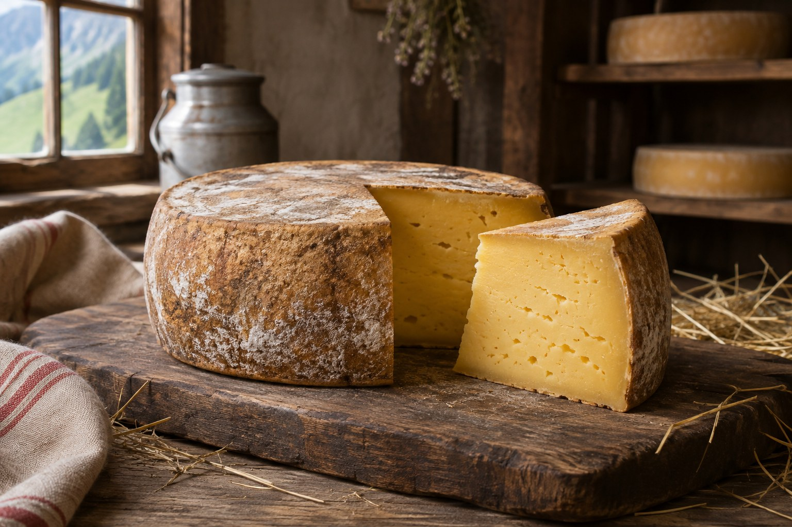

Aus unserem Reifekeller
Reife ist
Reife ist
Geschmack.
Ein Hofkäse, drei Reifestufen. Entdecke, wie sich Biss und Würze mit den Monaten verändern.

Ein Hofkäse, drei Reifestufen. Entdecke, wie sich Biss und Würze mit den Monaten verändern.